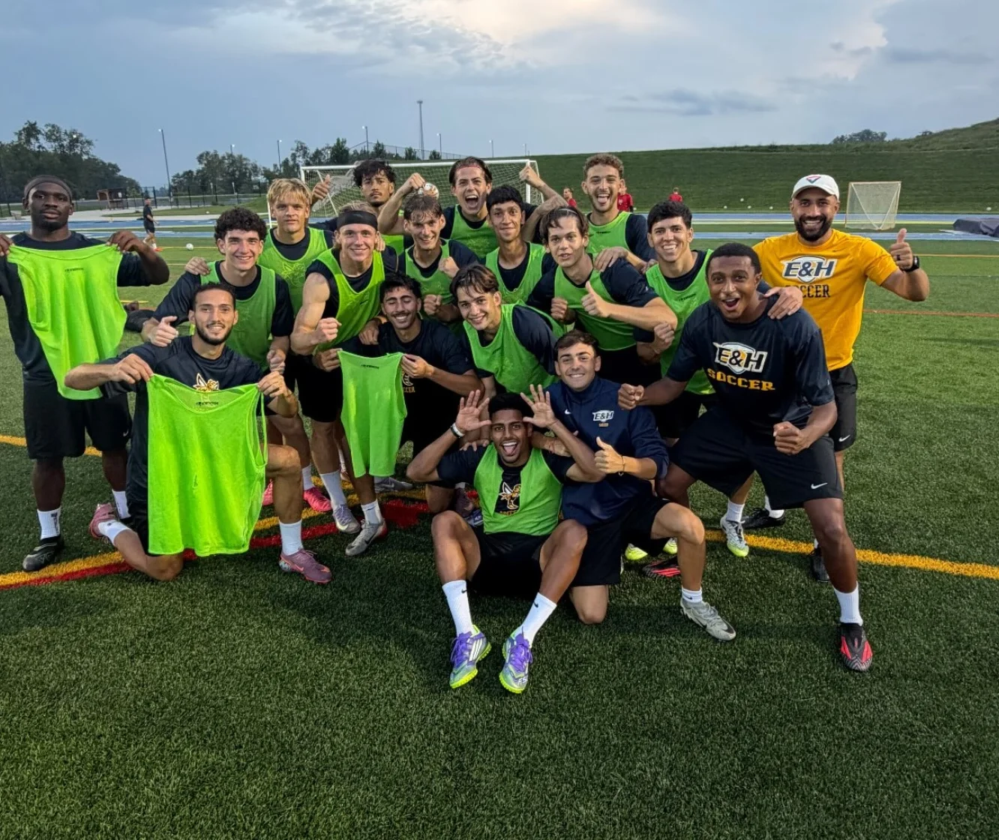
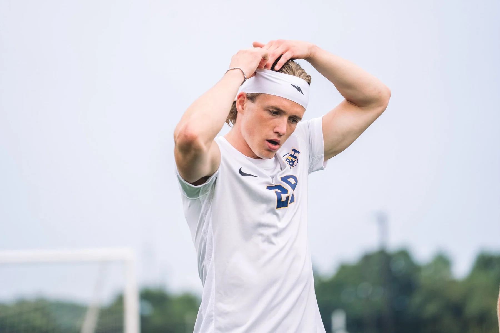

CONFERENCE SCHEDULE
2026 · THE WASPS
Every match.
Every moment.
Emory & Henry's SAC campaign, tracked from the final whistle to the next kickoff.
Overall1–1–4
SAC0–0–1
Goal diff.+1


PLAYER WATCH
GERMANY · MIDFIELDER / FORWARD
NIKLAS
BORCK
#14 · Right-footed · Born Aug 6, 2003
VERIFIED MATCH SHEETS
TEAM PULSE
Scoring balance
15.0Shots / match
6.17Corners / match
4Unbeaten run
ROAD AHEAD
Next three opponents
LIVE · ON DEMAND
Where to watch
Official SAC coverageLive video and on-demand replays via FloCollege. Free, no-login video is shown first whenever an official option is announced.
SUBSCRIPTIONStream availability can change close to kickoff. Official line-ups are normally added to live stats shortly before the match; the button remains useful for minute-by-minute updates and the final box score.
MATCH LOG
Completed games
| Date | Opponent | Site | Result | Score |
|---|
SOUTH ATLANTIC CONFERENCE
Current table
- 1–4 Viertelfinale · Heimrecht
- 5–8 Viertelfinale · auswärts
- Ab 9 Kein SAC-Turnierplatz
| # | Team | SAC | Pts | Overall | Form |
|---|
Official SAC data. Loading latest update…
DER MÖGLICHE WEG · 2026
Bis zum nationalen Finale
Drei mögliche Titel: reguläre SAC-Saison, SAC-Turnier und nationale NCAA-Division-II-Meisterschaft. Die Termine zeigen den Turnierplan, keine bereits bestätigte Teilnahme von Emory & Henry. Nach einem Ausscheiden gibt es keine Fortsetzung der regulären Herbstliga.
- REGULÄRE SAISON
Letztes angesetztes Ligaspiel
E&H zu Hause gegen Tusculum, 19:30 Uhr Eastern Time. Sobald alle regulären SAC-Spiele beendet sind, steht die Abschlusstabelle fest; Platz 1 gewinnt den Titel der regulären SAC-Saison. Offizieller Spielplan ↗
- SAC · 8 TEAMS
Conference-Viertelfinale
Plätze 1–8 spielen 1 gegen 8, 2 gegen 7, 3 gegen 6 und 4 gegen 5. Plätze 1–4 haben Heimrecht. Ein Sieg führt ins Halbfinale; Tag und Gegner für E&H sind noch offen.
- SAC · 4 TEAMS
Conference-Halbfinale
Zwei Entscheidungsspiele in Matthews, North Carolina. Die beiden Sieger erreichen das SAC-Finale.
- SAC · TITELSPIEL
Conference-Finale
Das Finale in Matthews entscheidet den SAC-Turniertitel. Zuletzt erhielt der Turniersieger den automatischen NCAA-Startplatz der SAC; andere Teams können weiterhin über die nationale Auswahl aufgenommen werden.
- NCAA · AUSWAHL
Wer gehört zu den 40 Teams?
Die NCAA legt das nationale Teilnehmerfeld und die Setzpositionen fest. Erst dann steht fest, ob E&H dabei ist und welchen Weg die Mannschaft im Turnier hätte.
- NCAA · 40 → 32 → 16
Erste und zweite Runde
Am 13. November spielen nur die Setzpositionen 7–10 jedes Turnierbereichs. Die Plätze 1–6 haben ein Freilos. Am 15. November spielen die verbleibenden 32 Teams um 16 Plätze.
- NCAA · 16 → 8 → 4
Dritte Runde und nationales Viertelfinale
Am 20. November wird das Feld auf acht Teams reduziert, am 22. November auf vier. Jeder der vier Turnierbereiche stellt dann einen Sieger für die nationalen Halbfinals.
- NCAA · 4 → 2
Nationales Halbfinale
Die letzten vier Teams spielen im CPKC Stadium in Kansas City, Missouri. Die Sieger der beiden Halbfinalspiele erreichen das Finale.
- NCAA · 2 → 1
Nationales Finale
Ein Spiel um die NCAA-Division-II-Meisterschaft, ebenfalls in Kansas City. Geplant: 12 Uhr Eastern Time / 18 Uhr deutscher Zeit. Das ist das spätestmögliche Saisonende.
Offizielle Termine: SAC-Turnierplan 2026 ↗ · SAC-Heimrecht ↗ · NCAA-Turnierplan und Regeln ↗ · SAC-Startplatz 2025 ↗
Wie funktioniert das nationale Turnier mit 40 Teams?
40 Teams, aber nur ein Finale. Gemeint ist die gesamte nationale Meisterschaft der NCAA Division II im Männerfußball. Das eigentliche Finale spielen am 5. Dezember nur die letzten zwei Mannschaften.
- Auswahl statt fester Tabellenplätze
- Automatisch qualifizierte Teams der Conferences und zusätzlich ausgewählte Teams („at-large“) bilden das Feld. Für die zusätzliche Auswahl zählt der NCAA Power Index, unter anderem mit Ergebnissen und Gegnerstärke. Ein guter SAC-Platz allein garantiert keinen NCAA-Startplatz.
- Vier Bereiche mit je zehn Teams
- Die NCAA ordnet das Feld vier „Super-Regions“ zu. E&H und die SAC gehören zur Super-Region 2. Es sind K.-o.-Turnierbereiche, keine Gruppen mit einer neuen Tabelle: Wer verliert, scheidet aus.
- Warum 40 und nicht 32?
- In jedem Bereich spielen zuerst 7 gegen 10 und 8 gegen 9. Zwei Teams scheiden aus, acht bleiben. Die Setzpositionen 1–6 überspringen diese erste Runde. Über alle vier Bereiche entstehen so aus 40 Teams die üblichen 32 für die nächste Runde.
- Bis zu sechs Siege zum nationalen Titel
- Nach den ersten Runden bleiben vier Bereichssieger. Sie treffen im nationalen Halbfinale aufeinander; die Sieger spielen das Finale. Ein Team mit Freilos braucht fünf Siege zum Titel, ein Team ohne Freilos sechs. Hin- und Rückspiele oder eine Gruppenphase gibt es nicht.
40 → 32 → 16 → 8 → 4 → 2 → 1 Meister
Format und Auswahl: Offizielles NCAA-Handbuch 2026–27 ↗. Gegner und Teilnahme von E&H werden erst nach der Auswahl bestätigt.